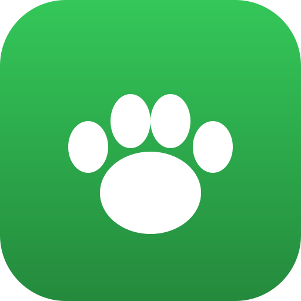
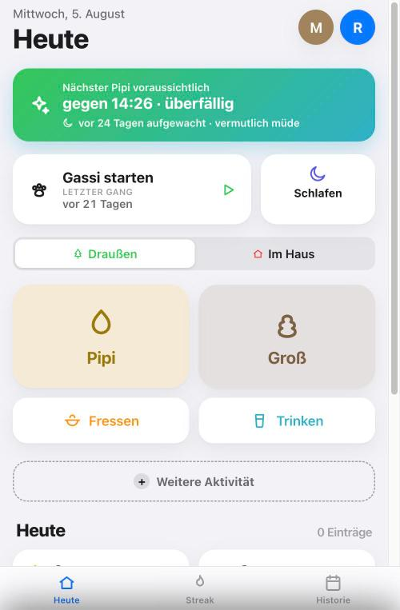
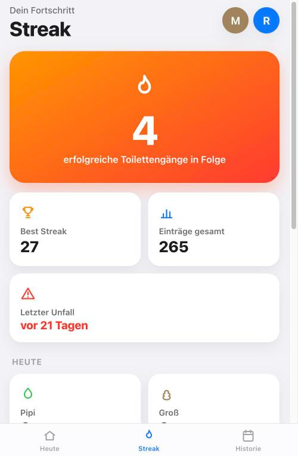
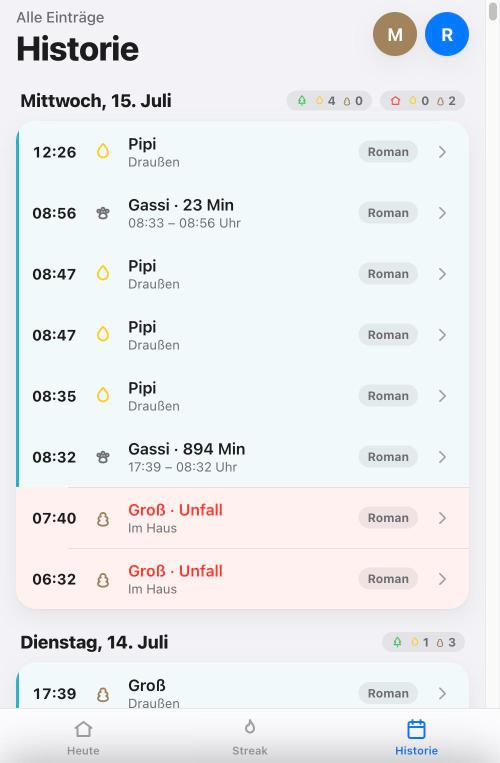
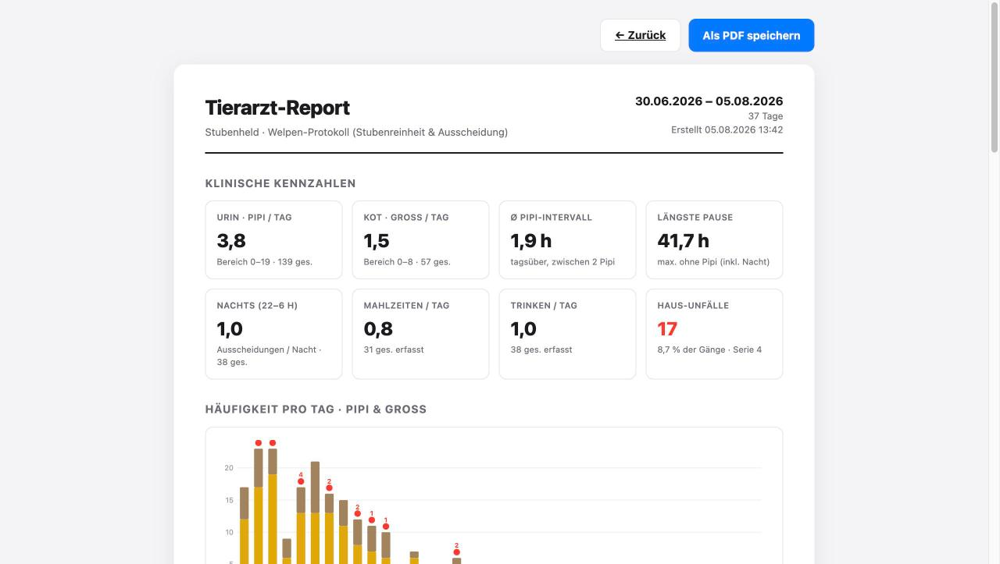

Progressive Web App

House-training a puppy means logging dozens of tiny events a day, usually with one hand and no patience to spare. Stubenheld turns that into a single tap - and quietly turns the log into something useful: a streak, a prediction of the next bathroom break, and a report a vet can actually read.
A puppy's bladder runs on a schedule nobody writes down. To spot the pattern you need a record - but every note app, spreadsheet or chat thread we tried collapsed under the same weight: it asked for too much at the exact moment we had the least attention to give.
So the product had one hard requirement, and everything else follows from it: open the app, press a button, close the app. No forms, no dialogs, no decisions. Anything that could not survive that constraint had to move out of the way - into the timeline, the statistics or the report, where there is time to look.



The same log that motivates at home becomes evidence at the practice. The report condenses a chosen period into clinical figures - urinations and stools per day, average interval, longest gap, night-time activity, accident rate - followed by charts per day. It is styled for paper and exports straight to PDF.

Server-rendered Twig, vanilla JavaScript, no build step and no frontend framework. The whole application ships as one Docker container: FrankenPHP serves the app and static assets, SQLite lives in a named volume, and the entrypoint warms the cache, runs migrations and starts the reminder scheduler on boot.
That choice is the point rather than a shortcut. A tool used twenty times a day has to start instantly and never break, so the interesting work went into interaction and data - prediction, streak calculation, the timeline, the report - instead of into a toolchain.
Deployment is a git push: a webhook pulls, rebuilds and restarts the stack behind a reverse proxy. A /health endpoint returns the running commit, build time and database status, and the same version is printed inside the app - so "did my change actually ship?" is one request away.
Constraints beat features. The one-tap rule decided the navigation, the data model and half the UI on its own - and every idea that could not be expressed within it turned out to belong somewhere else in the app, or nowhere at all.
Being the operator as well as the developer changed the priorities, too. Health endpoint, visible version, one-command deploy and a database that survives every rebuild were not polish at the end; they were what made it safe to keep shipping while the app was already in daily use.